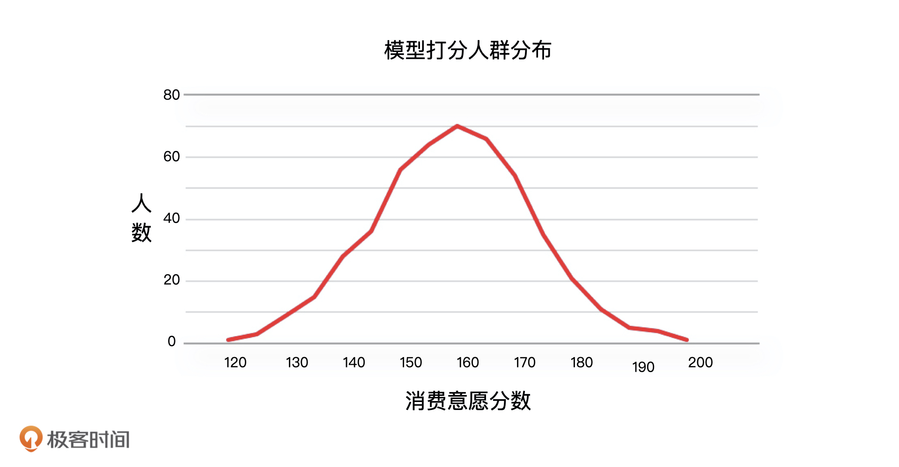
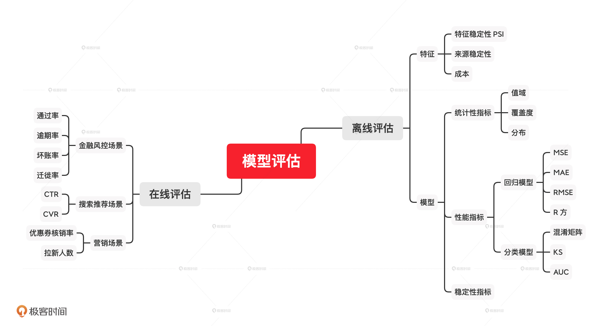

- 00 开篇词 你好，产品经理！你的未来价值壁垒在哪儿？.md
- 01 行业视角：产品经理眼中的人工智能.md
- 02 个人视角：成为AI产品经理，要先搞定这两个问题.md
- 03 技术视角：AI产品经理需要懂的技术全景图.md
- 04 过来人讲：成为AI产品经理的两条路径.md
- 05 通过一个 AI 产品的落地，掌握产品经理工作全流程.md
- 06 AI 模型的构建过程是怎样的？（上）.md
- 07 AI模型的构建过程是怎样的（下）.md
- 08 算法全景图：AI产品经理必须要懂的算法有哪些？.md
- 09 K近邻算法：机器学习入门必学算法.md
- 10 线性回归：教你预测，投放多少广告带来的收益最大.md
- 11 逻辑回归：如何预测用户是否会购买商品？.md
- 12 朴素贝叶斯：让AI告诉你，航班延误险该不该买？.md
- 13 决策树与随机森林：如何预测用户会不会违约？.md
- 14 支持向量机：怎么预测股票市场的涨与跌？.md
- 15 K-means 聚类算法：如何挖掘高价值用户？.md
- 16 深度学习：当今最火的机器学习技术，你一定要知道.md
- 17 模型评估：从一个失控的项目看优秀的产品经理如何评估AI模型？.md
- 18 核心技能：产品经理评估模型需要关注哪些指标？.md
- 19 模型性能评估（一）：从信用评分产品看什么是混淆矩阵？.md
- 20 模型性能评估（二）：从信用评分产品看什么是KS、AUC？.md
- 21 模型性能评估（三）：从股价预测产品看回归算法常用的评估指标.md
- 22 模型稳定性评估：如何用PSI来评估信用评分产品的稳定性？.md
- 23 模型监控：产品经理如何建设算法模型监控指标体系？.md
- 24 推荐类产品（一）：推荐系统产品经理的工作职责与必备技能.md
- 25 推荐类产品（二）：从0打造电商个性化推荐系统产品.md
- 26 预测类产品（一）：用户复购意向预测的底层逻辑是什么？.md
- 27 预测类产品（二）：从0打造一款预测用户复购意向的产品.md
- 28 预测类产品（三）：从0打造一款“大白信用评分产品”.md
- 29 自然语言处理产品：从0打造一款智能客服产品.md
- 30 AI产品经理，你该如何提升自己的价值？.md
- 31 AI产品经理面试，这些问题你必须会答！.md
- 春节加餐1 用户增长模型：怎么利用AI技术判断新渠道性价比？.md
- 春节加餐2 一次答疑，带你回顾模型评估的所有基础概念.md
- 期中周测试题 ，你做对了吗？.md
- 期中答疑 AI产品经理热门问题答疑合集.md
- 结束语 唯一不变的，就是变化本身！.md
18 核心技能：产品经理评估模型需要关注哪些指标？
你好，我是海丰。今天我们开始模型评估指标的学习。
整个AI项目的落地过程中都有着模型评估指标的身影。在模型设计阶段，AI产品经理在编写需求的时候，除了需要写清楚产品的业务指标，也要说明通过模型来解决什么样的问题，模型应该达到的标准是什么，算法工程师会根据这个标准进行模型开发。开发完成之后，AI产品经理还需要对模型的结果进行验收，来决定模型是否可以上线。
但是，一些刚刚转行AI产品经理岗位的同学，因为没有做过AI项目，不懂算法，根本搞不清楚模型都有哪些评估指标，更别说这些指标的区别了。
因此，我会花五节课来和你讲解模型评估的所有指标：第一节课，我会从全局的角度给你讲模型评估的指标都有什么；后三节课，我会重点给你讲解模型的性能指标，让你知道它们是怎么计算的；最后一节课，我们会详细讲解模型的稳定性指标。希望能帮助你全面且深入地掌握这些知识。
话不多说，我们正式进入今天的课程，首先来看看模型评估的分类。
模型评估的分类
模型评估可以分为离线评估和在线评估两大类，在产品的不同阶段，我们要根据场景的不同分别应用它们。
其中，在线评估是指在模型部署上线后，使用线上真实数据对模型进行的评估。这个时候，产品经理或者运营同学大多采用 ABTest 的方式去判断业务的表现。
比如，原来我们给用户推荐的商品没有经过模型匹配而是通过策略产出的。上线推荐模型之后，我们通过 ABTest，先导入一部分流量到模型匹配后的商品页面，让一部分用户看到原来的页面，让另一部分用户中的每个人都看到不一样的商品页面。通过一段时间（如 1 天或 1 周）的观察，如果另一部分用户的点击率或者 购买转化率有提升，我们再决定让这个模型正式上线。
离线评估是指在模型部署上线前对模型进行的验证和评估工作，这个时候如果发现问题，我们可以很方便地对模型的参数进行调整和改进。这也就是我和你讲的，需要在模型上线之前进行的模型验收部分的工作。
两种评估方式由于其场景不同，所评估的关注点也不尽相同。其中，离线评估关注的是模型效果相关的指标，如精准率、KS 等等。在线评估关注的是业务相关指标，比如新用户的转化率、优惠券的核销率、信贷审核的通过率等等。由于模型的在线评估与业务场景强相关，所以我们的课程重点将放在模型的离线评估上。
离线评估又可以分为特征评估和模型评估两大类，接下来，我们先来看模型特征的评估。
模型特征的评估
很多人会认为，模型评估就只评估模型最终的结果，比如召回率这些指标。但作为一个产品经理，我们不能只看模型这个黑盒子的最终结果，同时也要了解这个黑盒子里面的内容，所以，模型特征的评估也是要做的。
当然，我们不会检验全部的特征，只会去评估模型中重要性比较高的特征。都有哪些特征的重要性比较高呢？这需要算法同学在宣讲时同步给我们。
知道了重要特征有哪些，接下来就是对它们进行评估了。我们一般会对特征自身的稳定性，特征来源的稳定性，以及特征获取的成本进行评估，这都是业务比较关注，并且也是很容易出问题的地方。
首先，对于特征自身的稳定性，我们会使用PSI这个指标来判断。 PSI是指评估某个特征的数据随着时间推移发生变化而不再稳定的指标。简单来说，就是看这个特征是不是稳定的一个指标。如果一个重要特征不够稳定，就会影响模型整体的稳定性，自然也会影响前端业务。
其次，对于特征来源的稳定性，我们主要看特征是从哪里接入的。比如，上节课我提到的那次事故，就是因为我们将外接的一个数据源作为了模型的重要特征，它出了问题，整个模型就失效了。所以作为产品经理，你一定要关注特征来源的情况，因为这一点往往是算法工程师容易忽略的。
总的来说，针对特征来源稳定性的评估，我认为可以分为这样2种情况：
- 如果特征是从集团内部接入的，我们要看它是从哪条业务线获取的，这个业务的稳定性如何，业务方是否有可能收回或者停止共享业务数据；
- 如果特征接入方是外部公司，我们还要看这个公司是否合规，是否具备完善的技术储备等等。
针对这两种情况，特征接入的成本也不一样。
第一种，我们使用的特征是公司的内部数据。一般来说，使用公司内部数据是不存在成本的，但如果这些数据来自不同的业务线，在集团内部也会存在成本分摊或者业务数据单独计费的情况。比如，我们部门在做推荐系统时候，要用到某个部门的用户画像数据，这个部门就会记录我们调用的次数，到年底的时候和我们进行成本分摊。
第二种，我们使用的特征数据是从其他公司采购的，就会产生数据使用的费用，正常支付就可以了。比如，我们在做用户信用评估时候，不止使用内部数据也会采购其他公司的用户信用评分、多头借贷、欺诈指数等数据。
不过，模型特征的评估到这里还没有结束，出于对业务成本的控制，产品经理还要对这些付费特征做进一步评估：它们给模型带来的增益是否可以覆盖掉它们的成本，以及能否通过数据缓存来减少模型对它们的调用。
举个例子，我们之前有一个模型使用了运营商的数据，运营商按照调用次数计费，数据是按月更新的。所以，我们在给模型提供这个数据接口的时候直接在工程侧做了数据缓存，保证在一个月内，同样的数据我们只获取一次，这样就能有效减少数据使用的成本。
模型的评估
看完了特征的评估，接下来就是我们的重头戏：模型的评估。模型的评估主要包括三个部分：统计性、模型性能和模型稳定性。
统计性指标
统计性指标指的就是模型输出结果的覆盖度、最大值、最小值、人群分布等指标。我们拿到一个模型，最先看的不是性能指标也不是稳定性，而是统计性指标，它决定了模型到底能不能用。
以模型覆盖度为例，它表示模型可以覆盖人群的百分比，它的计算公式是：模型的覆盖度=模型可以打分的人数/需要模型打分的人数。覆盖度越高，代表模型可以打分的人数越多，也就是说模型可以评估更多人。如果模型覆盖度过低，即使它的性能表现很好，在某些业务场景下模型也不可用。
比如说，在金融风控场景下，如果一个模型覆盖度低于60%，基本就很难给到客户使用了，因为覆盖度太低，风控的业务人员基本没办法对这个模型应用到决策引擎中。如果非要用的话，最好的情况也就是用到决策树的某个分支上，专门作用于某一小部分人群，实际调用量会很小。
除了覆盖度，我们还要看模型输出结果的最大值和最小值设置得是不是合理，也就是分数范围。我们还是以信用评分模型为例，假设，京小白的信用分范围是0-110。这样的分数范围设计得就不是很合理，因为信用评分模型覆盖的人数非常多，如果模型输出的分数范围太窄，就会导致一个分数点集中很多人，人群没有得到很好的区分。那多少是合理的呢？我们可以参考芝麻分的范围：350-950。
最后，我们还要看模型的人群分布，它指的是模型对人打分后，分数和人群的分布形态，这个分布形态应该符合我们的常识，比如，用户消费能力评估模型对于人群的打分结果就应该符合正态分布。

总的来说，在不同场景下，由于我们的业务目标不同，对模型的要求不同，对模型统计性指标的关注点也不会相同。比如说，在金融风控这类场景中，因为我们需要对每一个用户进行评价，所以需要重点关注覆盖度这个指标，但是在用户精细化运营这样的场景中，我们只需要挑选出部分用户，那覆盖度指标我们又不需要重点关注了。因此，对统计性指标进行评估的时候，我们要充分考虑业务场景。
模型性能和稳定性评估
模型的性能评估指标就是评估模型效果的指标，它和模型要解决的问题相关，模型要解决的问题可以分成分类问题和回归问题。由此，我们可以把模型分成分类模型和回归模型。接下来，我们就详细说说，针对不同的模型可以使用哪些典型的性能指标。
我们说过，分类模型包括二分类模型和多分类模型。其中，二分类模型在实际业务中使用比较多，比如，它经常用于判断用户的性别、用户的购买偏好、支付宝的芝麻分、京东的小白信用、微信的支付分等问题。
分类模型的性能评价指标主要包括：混淆矩阵、KS、AUC 等等。通过混淆矩阵，我们既可以得到一个模型的精确率、召回率这些指标，从而可以评估一个模型的区分能力，我们也可以计算得到的TPR、FPR，从而计算出AUC、KS等相关指标。因此，混淆矩阵是评估二分类模型的基础工具。
回归模型的性能评价指标主要包括：MAE（平均绝对误差）、MSE（均方误差）、RMSE（均方根误差）、R 方等等。它常用来预测数值，比如房价和股价的预测就是典型的回归模型应用。
最后，模型的稳定性即判断模型输出结果，是否会随着时间推移，而发生较大变化不再稳定的指标，模型的稳定性会直接影响模型的结果。比如在风控场景下，如果风控模型不够稳定，对于用户风险判断的结果就会发生较大变化。这个时候，我们需要实时调整风控策略，同时也要注意调整后造成决策不合理的情况。对于模型的稳定性，我们主要使用PSI进行评估。
到这儿，模型评估的内容我们也讲完了。最后，我还想补充一句，今天，我们只需要知道这些指标的具体分类，以及不同模型对应的指标是什么就可以了。至于这些指标的具体含义、应用，以及具体计算方式，我会在后面的课程详细来讲。
小结
业务场景是决定模型性能最关键的因素，所以我们要根据实际的业务需求，来选择合适的评估指标。我把评估指标和对应的场景总结在了一张脑图中，这里，我们重点记忆离线评估的指标就可以了。

为了帮助你理解今天的内容，我还总结了2个特定的场景。
- 如果一个二分类预测模型的目标是预测一个人是好人还是坏人。基于不要错怪好人的原则，我们就会希望模型的准确率很高。不过，如果模型的召回率低一些（坏人在总人数中的比例），我们也是可以接受的。
- 在一个用户营销发券的场景下，如果业务的目标就是给用户发送优惠券，并不在意拿到优惠券的用户是否会消费，那么我们就希望模型的召回率高一些，准确率可以适当降低。
课后讨论
假设，你们公司是做电商业务的，现在领导打算让你做流失用户的召回，你认为评估这个模型的指标都有哪些？为什么？
欢迎把答案写到留言区和我一起讨论，我们下节课见！
© 2019 - 2023 Liangliang Lee. Powered by gin and hexo-theme-book.